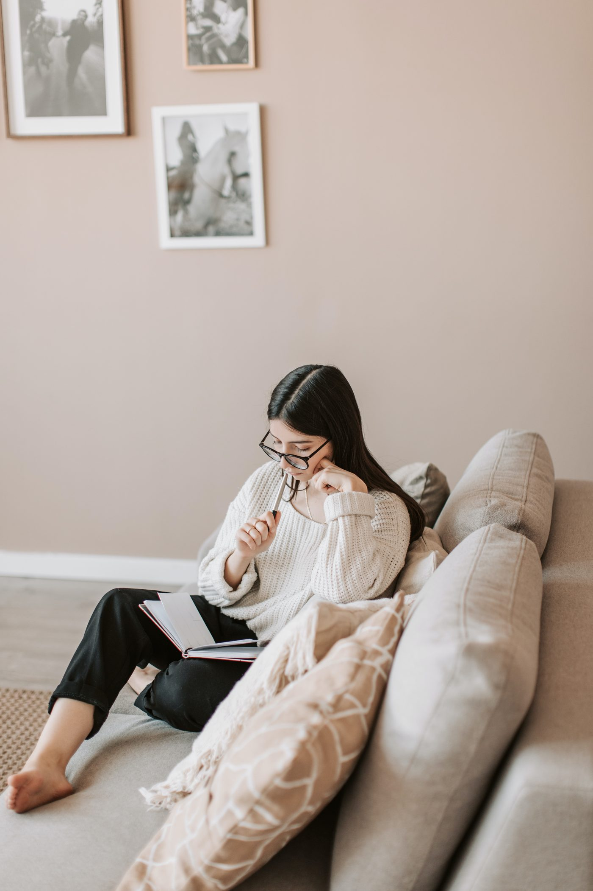

Just like how there’s a difference between optimal strategy for tournaments vs cash games, did you also know that you should play slightly differently depending on what part of the tournament you’re in? During a tournament, each player starts with the same amount of chips, and we keep raising the blinds and playing until only one player wins.
We can break these down into a few key stages, based on how much of the field is left, the payout implications for placing in different positions, etc. While you always want to play a solid strategy that’s based on math and poker logic, making a few adjustments based on tournament stages will help you to win more chips from your tournaments.
Early Stages
During the first part of the tournament, peoples’ stacks are relatively even, and you still have a long way to go. That’s why we want to protect our tournament life by not going all-in too much, especially when we only have thin value.
Of course, just by playing good poker, you’ll find yourselves going all-in sometimes—and inevitably busting sometimes as well. However, we shouldn’t seek out these spots. Basically, we want to play the early stages like a cash game, only slightly tighter.
Middle Stages
At the middle stages, anywhere between 50% and 20% of the field remains. At this point, you want to get your chips in with a decent edge, yet understand that you’ll still lose sometimes. At this point, we want to amass as large of a stack as possible so that we have more power in the later stages and, therefore, a great chance to win the entire tournament.
On the Bubble The ‘bubble’ occurs right before payouts. For instance, if the tournament pays out to the top 10%, then we hit the bubble when we’re around 15%. If you have a big stack on the bubble, apply lots of small aggressions because you want to get shorter stacks to fold. They’re more likely to give it up because they are so close to cashing and they don’t want to lose that.
If you’re playing a short stack, however, it’s fine to play tighter so that you can win some chips. However, whatever you do, don’t just blind out—even if you’ll get a min cash. If you just fold forever and lose all your chips to the blinds, there’s no way you’ll ever win the whole shebang.
Late Stages
Once we’ve crossed the bubble, the shallower stacks no longer want to play as tight. They’ve won their buy-ins back, so now it’s time to get aggressive and take a shot at winning the tournament. Don’t be afraid to shoot for the moon.
Apply pressure to stacks that are smaller than yours, and, most crucially, play a good, fundamentally sound strategy. At this point, it’s all about that combination and luck of
skill that will help you to cross the finish line.